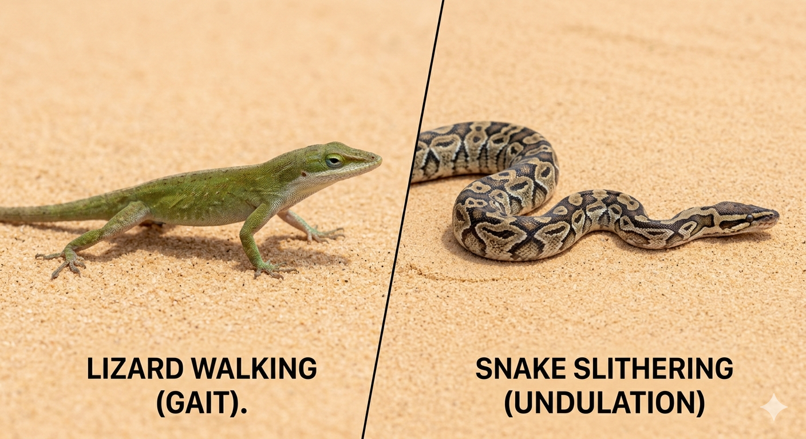
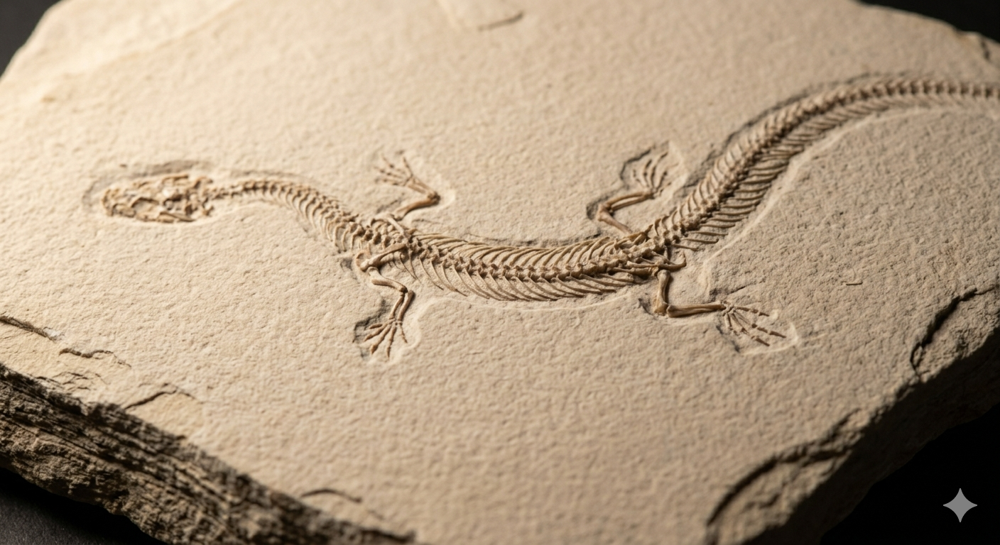
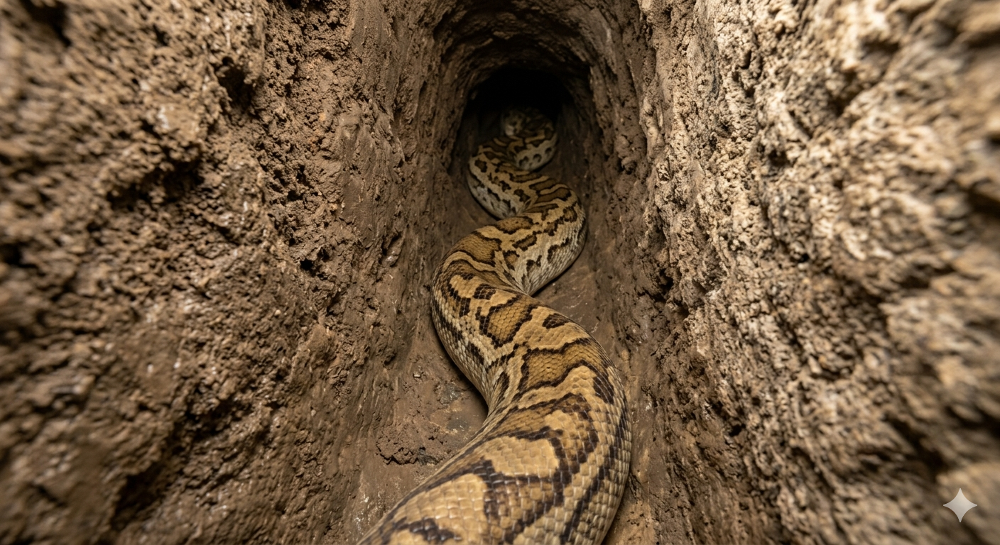
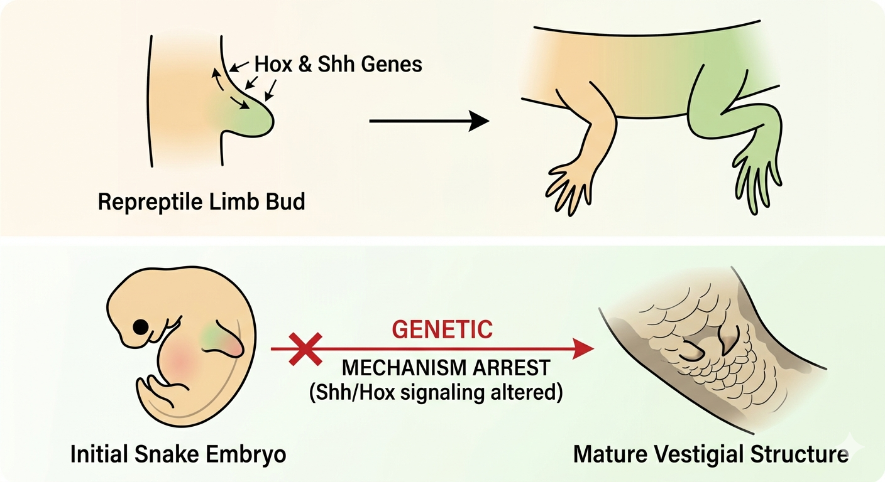
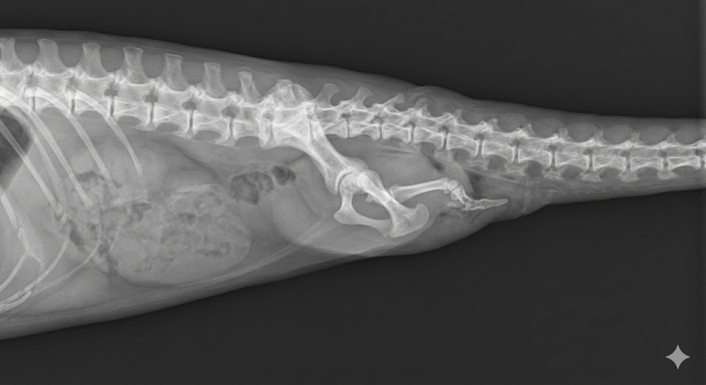
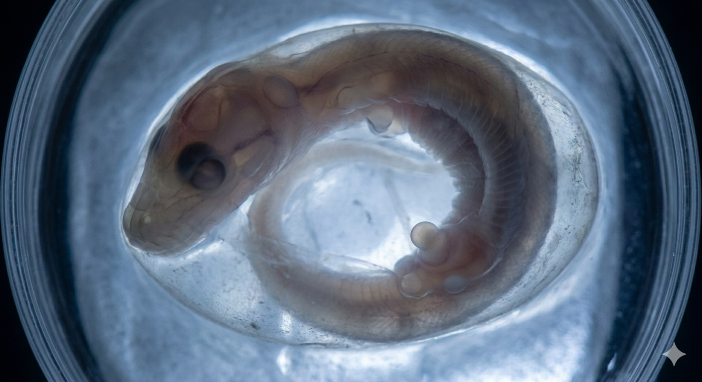

An extensive academic breakdown exploring how a lost set of ancestral limbs
became one of evolutionary biology's strongest pieces of evidence for descent with modification.
Origins of the Structure
Purpose of the Structure in
the Past

Snakes evolved from four-limbed reptiles similar to contemporary lizards, preserving
their fundamental genetic lineage and vestigial legs.(Scientific American, 2024)
Early ancestors' legs were very important, as much of these lizards' lives depended on
them moving around on land, such as walking, running, and climbing.
The front and back legs gave the animals the physical leverage they needed to hunt prey
and avoid predators in a variety of land environments.(University of California Museum of Paleontology, 2021)
Over very long periods of time, changing environments led to selective pressures, making
these limbs useless for moving around.(Apesteguía & Zaher,
2006)
Examples in Living and Extinct Species

Fossil records of long extinct animals like Tetrapodophis show that
snakes once had four tiny limbs, likely used for mating rather than walking.(Martill et al., 2015)
Another ancestor, Najash rionegrina, is shown to possess a stable
sacrum and robust hind legs positioned outside the rib cage.(Apesteguía & Zaher, 2006)
Today, pythons and boas still carry external "pelvic spurs".(Simmons & Conway Morris, 2020)
While these remnants are now useless for movement, they have been repurposed for
courtship (mating), proving that vestigial traits can evolve new functions over
time.(Katz, 2024)
Ecological Selective Pressures
Loss of Original Purpose

Changing environments altered selective pressures, favouring ancestors born with
naturally shorter limbs who possessed unique evolutionary advantages in restrictive
physical settings.(UCMP, 2021)
According to the Burrowing Hypothesis, protruding limbs became a
significant liability during subterranean movement because they caused intense physical
friction and obstructed narrow tunnel pathways.(AMNH,
2018)
Similarly, the Aquatic Hypothesis suggests that ancestral
marine-adapted snakes required high hydrodynamic efficiency; external limbs created drag
that severely compromised swimming speed.(Polly, 2016)
Consequently, natural selection accelerated the transition toward a streamlined,
cylindrical body shape optimized for zero-drag movement.(Science, 2023)
Genomics of the Limb Loss

Modern snakes retain the complete DNA sequence and structure required to build limbs
(legs).(Science, 2023)
Thus, they haven't lost these genes in any way; mutations in their ZRS
enhancer, a genetic "off switch" that regulates developmental sequences,
have led to this loss.(Katz, 2024)
This mutated switch stops the growth of limb buds too soon during embryonic
development.(UCMP, 2021)
Because of this, the cells die or change their function, which keeps the structures in a
stunted vestigial state.(UCMP, 2021)
Evidence Base for Evolution
Internal Skeletal Evidence

The fossil record tracks a clear transition from snakes with full legs (Najash) to those
with tiny limbs (Tetrapodophis), ending in today's limbless species.(Katz, 2024)
Even large modern snakes like the Boa constrictor retain hidden evidence of
this past.(AMNH, 2018; Polly, 2016)
They have tiny femur bones and pelvic remnants tucked deep within their internal tissue
musculature.(Polly, 2016)
This proves that evolution prefers modifying and reducing pre-existing framework
structures over instantaneously developing features from scratch.(Scientific American, 2024)
Embryos & Synchronized Fields

Embryology and genomics provide completely independent, yet incredibly synchronized,
evidence of limb reduction.(UCMP, 2021)
Early snake embryos form limb buds that are the same as those of mammals or birds, but a
"broken" genetic switch makes them stop growing.(Science,
2023)
Ultimately, four massive pillars of science (Fossils, Anatomy, Embryology, and Genes)
converge upon identical conclusions.(National Geographic,
2023)
All confirm that snakes evolved from ancestors with four limbs through gradual changes
over millions of years.(Scientific American, 2024)